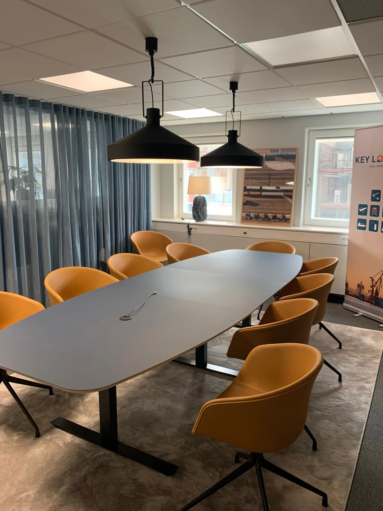
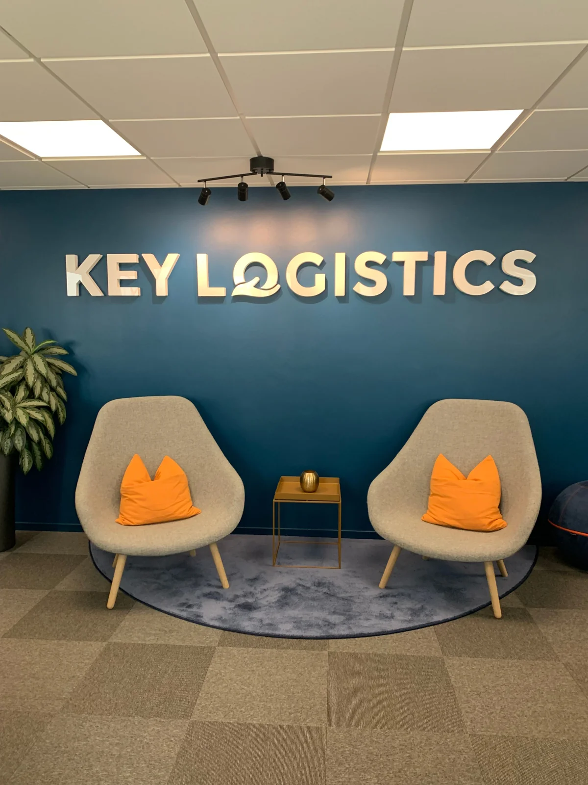
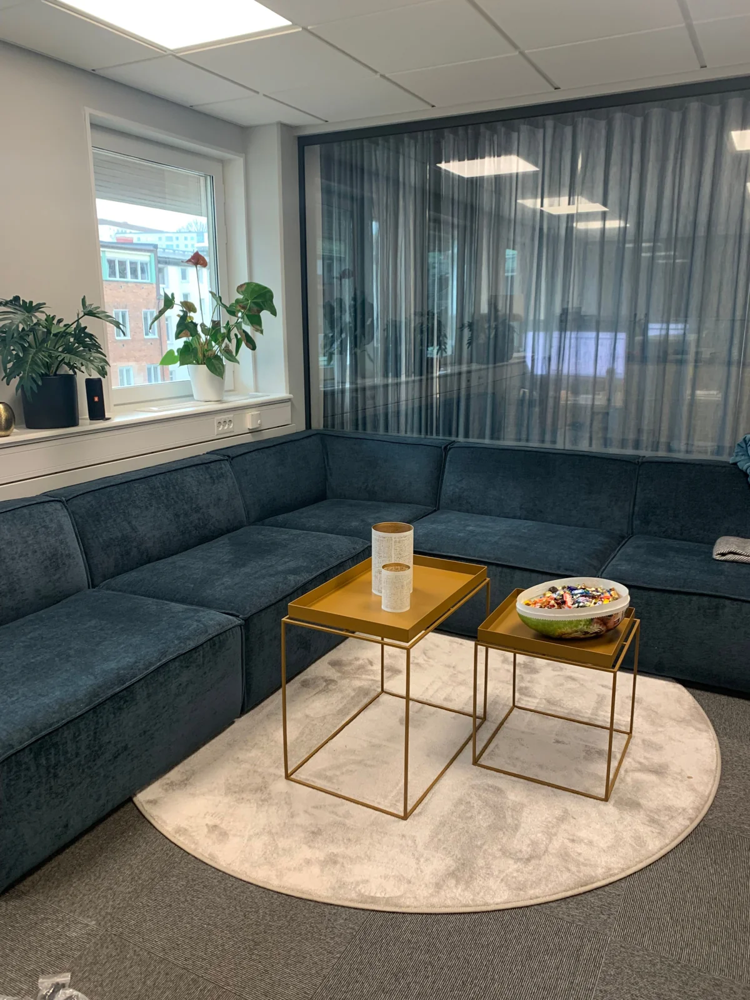

Key Logistics
Kontor & arbetsliv

Plats för jobbet.
Och människorna.
Ett kontor med plats för möten och pauser. Här samspelar färgsättning, möbler och textilier till en tydlig helhet.
Varmt gula stolar och blågröna toner återkommer i rummen. En välkomnande reception och en lugn lounge ger arbetsplatsen flera olika uttryck.
Prata om ett liknande projekt
